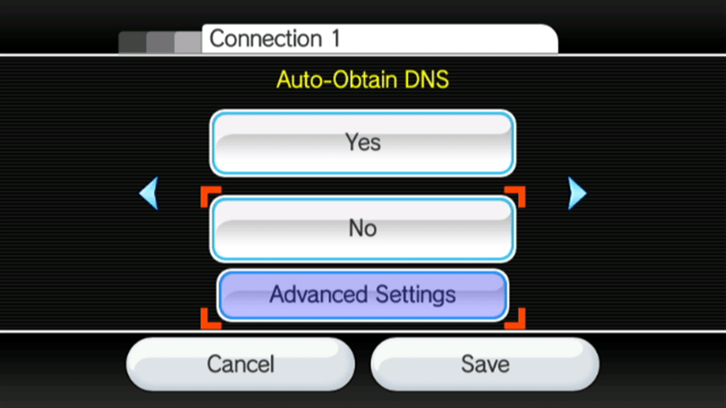

str2hax
Se hai bisogno di qualsiasi informazione riguardante questo tutorial, entra nel server discord di RiiConnect24 (raccomandato) oppure scrivici una mail a [email protected].
Nota che se il tuo ISP o networking environment impedisce di usare server DNS personalizzati, str2hax non funzionerà e dovrai scegliere un altro exploit da usare.
str2hax è un exploit per la Wii che è attivato caricando la Licenza dell’Utente Wii. Non richiede niente se non una connessione Internet che ti permette di cambiare il DNS della tua Wii.
Di cosa hai bisogno
- Una Wii con connessione Internet
Istruzioni
Sezione 1 - Connettere
Questo exploit ti richiede di impostare il tuo DNS per connettersi al servere che contiene l’exploit.
- Vai su
Opzioni Wii.
- Vai su
Impostazioni Wii.
- Vai alla
Pagina 2, poi clicca suInternet.
- Vai su
Impostazioni Connessioni.
- Seleziona la tua connessione corrente.

- Vai su
Cambia Impostazioni.
- Vai su
Ottieni DNS automatico(Non Indirizzo IP), poi selezionaNo, e poiImpostazioni Avanzate.  - Inserisci
18.188.135.9come DNS primario. - Inserisci
18.188.135.9come DNS secondario. - Seleziona
Conferma, poi selezionaSalva.
- Seleziona
OKper effettuare un test di connessione.
- Se la connessione è andata bene, seleziona
Noper saltare il Wii System Update.
- Se non è andata bene, allora usa un altro exploit.
- Se la connessione è andata bene, seleziona
Sezione 2 - Eseguire l’Exploit
- Vai sulla sezione
Internet, poi suAccordi Usero suAccordi/Contatti, poiSi. - Se vedi un pony sulla schermata con uno sfondo celeste, hai impostato il tutto correttamente. Attendi 1-2 minuti per aspettare che l’exploit si attivi (dovrebbe richiedere circa 1 minuto e 25 secondi). L’exploit installerà l’HackMii Installer perrfarti continuare.
Se l’HackMii Installer non carica e se frizza (non puoi muovere il tuo cursore) o non ci mette 1-2 minuti ad attivarsi, per favore riavvia la tua Wii e riprova l’exploit.
Se hai installato una mod come CTGP Revolution o Project+, str2hax potrebbe caricarla. Se lo fa, riavvia la tua Wii e riprova senza la scheda SD inserita.
Continua l’installazione del Canale Homebrew e di BootMii